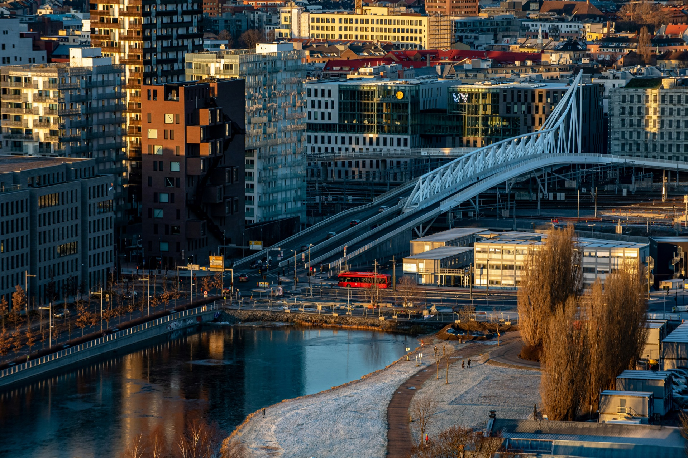
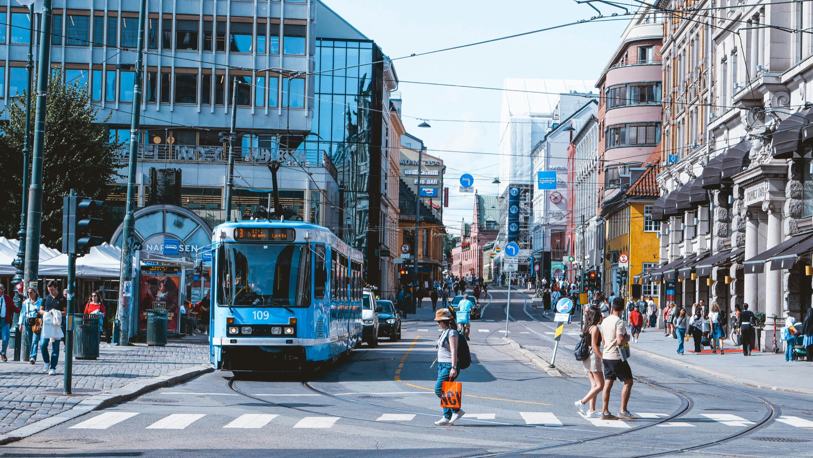

What to prioritise, what to skip, and why a bike changes the maths
One day in Oslo is enough — if you use it well. The city is compact, the sights are concentrated, and the distances between them are short enough that you don't need to plan around transport. The question isn't whether you can cover it in a day. It's how you want to spend the time you have.
Most one-day itineraries for Oslo point you to the same four places: the Opera House, Vigeland Sculpture Park, Aker Brygge and the Bygdøy peninsula. That is not wrong. These are genuinely good, and together they give you a real sense of the city — the waterfront, the green spaces, the fjord.
But Oslo has something most visitors never find: the Nordmarka forest begins fifteen minutes north of the city centre. Four hundred square kilometres of pine and birch, gravel roads and lakes. If you have the whole day and you are reasonably active, you can do the city in the morning and the forest in the afternoon. That combination — urban Oslo in the first half, genuine wilderness in the second — is harder to pull off anywhere else in Europe.
Start at the Opera House. It sits at the water's edge and its sloping marble roof is designed to be walked on — most people don't realise this until someone tells them. From there, the route west along the waterfront takes you through Aker Brygge, Oslo's old shipyard turned into a strip of cafés and restaurants with views across to the Bygdøy peninsula and Oslofjord islands.

From the waterfront, ride or walk north through the city centre to Vigeland Park. It is a larger and stranger place than photos suggest — 200 sculptures by Gustav Vigeland, installed across a formal park that takes the better part of an hour to walk properly. The Monolith is the centrepiece: a 14-metre column carved from a single block of granite. Worth slowing down for.
The Royal Palace sits on the hill at the top of Karl Johans gate, the main boulevard. The changing of the guard happens daily at 13:30. The palace grounds are open and pleasant — a good place to sit.
Bygdøy is a separate peninsula a few kilometres west. It holds the Viking Ship Museum (moving to a new building nearby — check current status), the Fram polar exploration ship and the folk museum. Budget two hours minimum if you go. The ride out is excellent — flat waterfront path with fjord views the whole way.
On foot, Vigeland Park is a 3 km walk from the waterfront. Bygdøy adds another 8 km round trip. That is a lot of pavement before you have seen anything. A bike turns those distances into minutes, leaves you with energy in the afternoon and lets you stop whenever something is worth stopping for — which in Oslo happens often.
A guided bike tour does something else: it cuts the navigation entirely. You spend the day looking at Oslo rather than your phone. The Oslo City Highlights tour covers the Opera House, Vigeland Park, Aker Brygge and the Royal Palace in two hours, with pickup at your hotel. That is the morning done. The afternoon is yours.
The standard one-day circuit is good. But if you are the kind of traveller who would rather see one unexpected thing than four expected ones, spend your afternoon in the forest instead of a museum.
The Oslo Gravel Short runs two hours and takes you from the city into the Nordmarka forest — thirteen kilometres of pine and birch on good gravel roads, hotel pickup included, e-bike available. Most visitors to Oslo spend their entire trip in the centre. The forest is fifteen minutes away and almost no tourists ever reach it. That ratio — the experience you get relative to how few people have it — is unusually good.
The Oslo City Highlights tour gets the main sights done efficiently — private guide, hotel pickup, two hours. What you do with the afternoon is up to you.
See the City Highlights TourThe Opera House, Vigeland Sculpture Park, Aker Brygge and the Bygdøy peninsula (Viking Ship Museum area) are the most rewarding in a single day. The Munch Museum is worth adding if you have time. Oslo is compact — all of these are within a few kilometres of each other.
Yes. Oslo is a small, well-organised city. The main sights are concentrated and the distances are short. A bike tour covers the centre in two hours. Add Bygdøy or the forest in the afternoon and you have a genuinely full day without rushing anything.
The centre is walkable, but Vigeland Park is 3 km from the waterfront and Bygdøy adds another 8 km round trip. On foot, the distances eat into the time you have for actually looking at things. A bike — hired or guided — solves this.
Yes — the Nordmarka forest starts fifteen minutes north of the city. Most visitors never find it. A two-hour guided forest bike tour (hotel pickup, e-bike available) fits neatly into a one-day itinerary alongside the city centre sights.
The Oslo City Highlights tour (18 km, 2 hours) is the most efficient way to cover the main sights with a local guide. For something different, the Oslo Gravel Short takes you into the Nordmarka forest in the same amount of time — an experience most visitors to Oslo never have.